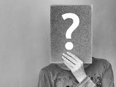
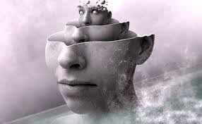

ça
Le ça ( en anglais Id) est le lieu des pulsions, notamment de la libido ( énergie vitale qui englobe nos désirs, nos envies, nos pulsions de vie. De manière générale désigne et notre activité sexuelle concrète et imaginaire). Le ça ignore les jugements de valeurs.
moi

Le Moi (en anglais Ego) est une partie du ça qui a subi une différenciation particulière en étant au contact avec la réalité extérieure . C'est l'instance psychique à laquelle se rattache la conscience et c'est lui qui communique avec le monde extérieur.
surmoi
Le Sur-Moi (en anglais Super-Ego) est une entité à part entière à l'intérieur du Moi. Il est l'héritier des interdits et des normes parentaux. Il est également le descendant du Surmoi de nos parents
Il juge, censure et punit le Moi.
conscient
La « relation intériorisée immédiate ou médiate qu'un être est capable d’établir avec le monde où il vit et avec lui-même
Perception que nous avons de notre existence, des états et des actes de notre esprit, de ce qui se passe en nous.
Subconscient
Le subconscient est ainsi ce qui fait fonctionner notre corps, sans que nous en ayons conscience : par exemple, certains mouvements automatiques en conduisant, ou encore la digestion, les réactions nerveuses du corps, les réflexes de peur, etc.
inconscient

L'inconscient se définit tout d'abord par opposition à la conscience.
L'inconscient est donc une sorte de sous-sol de notre vie psychique où nous plaçons tout ce qui heurte notre conscience. Le refoulement est la notion clef de la théorie freudienne.